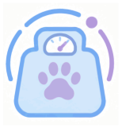
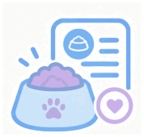
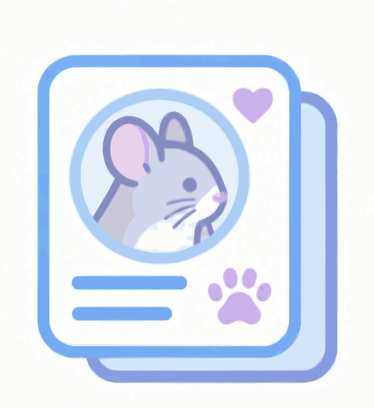
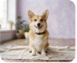

Вага під контролем
Записуйте зважування, бачте тренд і порівнюйте показники зі здоровою межею улюбленця.
Динаміка замість здогадок
Щоденник здоров'я улюбленця
Вага, раціон і щоденна турбота — в одному місці. Помічайте зміни вчасно та даруйте своєму другу більше здорових днів.
Безкоштовно · без картки · з увагою до приватності
Усе важливе — поруч
Не потрібно пам'ятати все. Щоденник допоможе зосередитися на тому, що справді важливо.

Записуйте зважування, бачте тренд і порівнюйте показники зі здоровою межею улюбленця.
Динаміка замість здогадок

Плануйте добову норму та відмічайте порції. Знайте, скільки грамів і калорій залишилося на день.
Кожна порція має значення

Зберігайте щоденні нотатки й звички в одному щоденнику. Важливе легко знайти перед візитом до лікаря.
Менше тривоги, більше ясності
Додайте ім'я, породу, вік і фото. Визначте здорову межу ваги разом із ветеринаром.
Додайте актуальну вагу й добову норму їжі. Це початок вашої спільної історії.
Відмічайте порції та самопочуття. Зважуйте регулярно, щоб бачити зміни.
Чому так важливо регулярно зважувати своїх улюбленців
Вітаємо, Олено. Сьогодні все під контролем.

Вельш-коргі · хлопчик · 3 роки
У межах норми
9 вересня — 7 жовтня 2026
12,4 кг −0,4 кг за місяць
Однаковий час — точніше порівняння
3 останні
100 г Корм «Мурчик»
40 г смаколики
150 г Корм «Корм»
120 г Корм "Сила"
30 г прикорму "Смаколики"
Нагадування активне
Зважуйте Марса раз на тиждень. Якщо вага різко зміниться або зникне апетит — зверніться до ветеринара.
Налаштувати нагадуванняСамопочуття, активність, спостереження
«Раніше я намагалася все запам'ятати. Тепер бачу, як змінюється вага Марса, і точно знаю, чи вистачило йому їжі сьогодні».
Ілюстративна історія використання щоденника.
Так. Створіть профіль улюбленця та ведіть щоденник ваги й харчування без платіжної картки.
Погодьте норму з ветеринаром. Внесіть грами та калорійність корму — щоденник покаже прогрес і залишок.
Перевірте зважування й зверніться до ветеринара. Графік допоможе помітити зміни, але не ставить діагноз.
Щоденник доступний у вашому обліковому записі. Ви самі вирішуєте, яку інформацію показати ветеринару.
Електронна пошта: hello@pukhnastyi.ua
Відкрити в Google MapsВашому другу потрібні ви. А вам — трохи більше ясності.